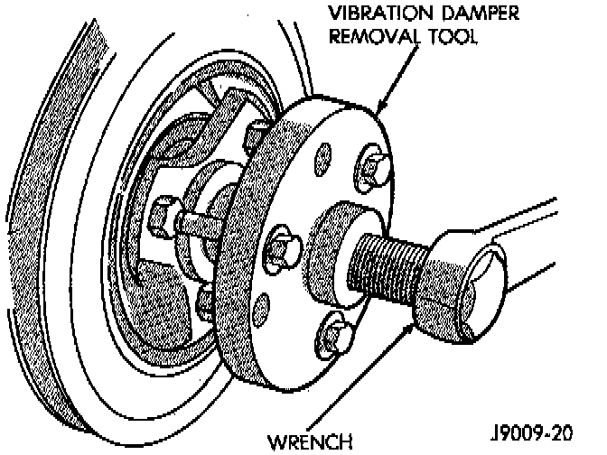

Harmonic Balancer - Crankshaft Pulley: Service and Repair

REMOVAL
1. Disconnect negative cable from battery.
2. Remove the serpentine drive belt and fan shroud.
3. Remove the vibration damper retaining bolt and washer.
4. Use Vibration Damper Removal Tool 7697, or equivalent to remove the damper from the crankshaft.
INSTALLATION
1. Apply Mopar Silicone Rubber Adhesive Sealant, or equivalent to the keyway in the crankshaft and insert the key. With the key in position, align the keyway on the vibration damper hub with the crankshaft key and tap the damper onto the crankshaft.
2. Install the vibration damper retaining bolt and washer.
3. Tighten the damper retaining bolt to 108 Nm (80 ft. lbs.) torque.
4. Install the serpentine drive belt and tighten to the specified tension.
5. Connect negative cable to battery.